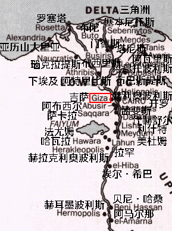
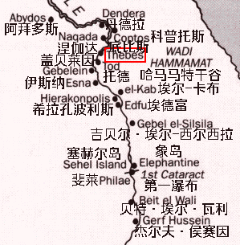
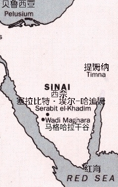
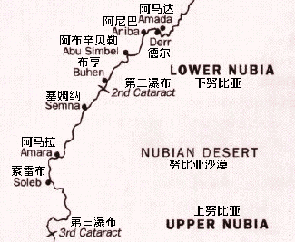

下埃及

- 阿布西尔(Abusir，阿拉伯语:ابو صير):古埃及称佩尔-奥西里斯(pr wsjr)，阿布西尔纸草发现地；
- 亚历山大里亚(Alexandria，希腊语:Ἀλεξάνδρεια，以「大帝」亚历山大三世命名):古埃及称拉科提斯(r-ꜥ-qd(y)t)，守护神为塞拉匹斯(埃及神祇阿皮斯与希腊神祇的融合神)，托勒密王朝(第31王朝)首都；
- 阿马尔那(Amarna，阿拉伯语:العمارنة):古埃及称埃赫塔吞(Akhetaten)，意为“阿吞地平线”，守护神为阿吞，第18王朝阿马尔那时期首都；
- 阿特里比斯(Athribis，希腊语:Ἄθριβις):古埃及称赫瓦特-塔-赫里-吉布(Ḥw.t-tꜣ-ḥry-jb)，守护神为雷皮特，黑牛诺姆(第10诺姆)首府；
- 阿瓦里斯(Avaris，希腊语:Αὔαρις):古埃及称胡特-瓦雷特(ḥw.t wꜥr.t)，守护神为塞特，第14、15王朝首都；
- 贝尼·哈桑(Beni Hassan，阿拉伯语:بني حسن):墓地；
- 布巴斯提斯(Bubastis，希腊语:Βούβαστις):古埃及称佩尔-贝斯特(Pr-Bȝst.t)，意为贝斯特(猫女神)的神庙，守护神为贝斯特，第22王朝首都，南方王子诺姆(第18诺姆)首府；
- 布西里斯(Busiris，希腊语:Βούσιρις):古埃及称杰杜(ḏdw)，守护神为奥西里斯，安杰提神诺姆(第9诺姆)首府；
- 布陀(Buto，希腊语:Βοῦτος):古埃及称佩尔-瓦吉特(pr-wꜣḏyt)，意为瓦吉特(下埃及守护神)神庙，守护神为瓦吉特；
- 开罗(Cairo，阿拉伯语:القاهرة):现代埃及首都；
- 代赫舒尔(Dahshur，阿拉伯语:دهشور):代赫舒尔金字塔所在地；
- 三角洲(Delta):尼罗河三角洲；
- 埃尔-希巴(el-Hiba，阿拉伯语:الحيبة):古埃及称塔尤-贾耶特(t3yw-ḏ3yt)，南方王子诺姆(第18诺姆)首府；
- 法尤姆(Faiyum，阿拉伯语:الفيوم):法尤姆绿洲，古埃及称沙德特(šd t)；
- 吉萨(Giza，阿拉伯语(埃及):الجيزة):古埃及称提佩尔西斯(ϯⲡⲉⲣⲥⲓⲥ)，吉萨大金字塔所在地；
- 赫利奥波利斯(Heliopolis，希腊语:Ἡλιούπολις，意为“日城”):古埃及称尤努(jwnw)，意为“柱子”，守护神为拉，繁荣权杖诺姆(第13诺姆)首府；
- 赫拉克里奥波利斯(Heracleopolis，希腊语:Ἡρακλέους πόλις):古埃及称赫南-奈苏特(nn nswt)，守护神为赫里沙夫，第9、10王朝首都，索普杜-羽隼诺姆(第20诺姆)首府；
- 赫耳墨波利斯(Hermopolis，希腊语:Ἑρμούπολις):古埃及称赫姆努(ḫmnw)，意为“八”，守护神为托特和八元神，哈雷斯诺姆(第15诺姆)首府;
- 拉罕(Lahun，阿拉伯语:اللاهون):古埃及称拉-赫内特(rꜣ-ḥn.t)，意为“运河口”；
- 莱昂托波利斯(Leontopolis，希腊语:Λεόντων πόλις，意为“狮城”):古埃及称塔雷穆(Taremu)，意为“鱼之地”，守护神为贝斯特和塞赫麦特，第23王朝首都，海塞布公牛诺姆(第11诺姆)首府；
- 利什特(Lisht，阿拉伯语:اللشت):古埃及称伊特-塔维(Itj-tawy)，意为“一统两土地”，第12、13王朝首都；
- 下埃及(Lower Egypt):尼罗河下游及三角洲的埃及土地，古埃及称塔-梅胡(tꜣ mḥw)，意为“北方”；
- 孟斐斯(Memphis，希腊语:Μέμφις):古埃及称孟斐(mn nfr)，意为“永久而美丽”，守护神为普塔，第3、4、5、6、7、8、25(库施)、27(波斯)、31(波斯)王朝首都，白墙诺姆(第1诺姆)首府；
- 美杜姆(Meydum，古埃及语:Mr(y)-Jtmw，意为“阿图姆(黄昏的太阳神)眷恋”):美杜姆金字塔所在地；
- 门德斯(Mendes，希腊语:Μένδης):古埃及称杰德特(ḏd.t)，守护神为巴内布杰德特，第29王朝首都，鱼诺姆(第16诺姆)首府；
- 瑙克拉提斯(Naucratis，希腊语:Ναύκρατις，意为“海军指挥部”):古埃及称尼沃特-卡尔特(Njwt-kꜣrṯ)或佩尔-梅里特(pr-mryt)，守护神为托特，古希腊佣兵在埃及的聚集地与殖民地；
- 罗塞塔(Rosetta):罗塞塔石碑出土地，碑文见我之前的翻译；
- 萨卡拉(Saqqara，阿拉伯语:سقارة):萨卡拉王墓所在地；
- 塞本尼托斯(Sebennytos，希腊语:Σεβέννυτος):古埃及称圣牛之城(ṯb-(n)-nṯr)，守护神为安胡尔，第30王朝首都，犊与母牛诺姆(第12诺姆)首府；
- 塔尼斯(Tanis，希腊语:Τάνις):古埃及称贾奈特(ḏꜥn.t)，守护神为阿蒙，第21王朝首都，北方王子诺姆(第19诺姆首府)；
上埃及

- 第一瀑布(1st Cataract):尼罗河第一瀑布；
- 阿拜多斯(Abydos，阿拉伯语:أبيدوس):古埃及称阿卜杜(ꜣbḏw)，守护神为赫恩提阿门图，奥西里斯和伊西斯，大地诺姆(第8诺姆)首府；
- 贝特·埃尔-瓦利(Beit el Wali):埃及神庙，修建于拉美西斯二世时期；
- 科普托斯(Coptos，希腊语:Κόπτος):古埃及称盖布图(gbtjw)，守护神为敏，双隼诺姆(第5诺姆首府)，上埃及红海跨哈马马特干谷贸易商业中心；
- 丹德拉(Dendera，阿拉伯语:دَنْدَرة):古埃及称尤内特(jwnt)，守护神为哈托尔，鳄鱼诺姆(第6诺姆)首府；
- 埃德富(Edfu，阿拉伯语:إدفو):古埃及称贝赫德特(bḥdt)，守护神为荷鲁斯，荷鲁斯王座诺姆(第2诺姆)首府；
- 象岛(Elephantine，希腊语:Ἐλεφαντίνη):古埃及称阿布(ꜣbw)，守护神为克奴姆，弓诺姆(第1诺姆)首府；
- 埃尔-卡布(el-Kab，阿拉伯语:الكاب):古埃及称奈赫布(nḫb(t))，守护神为奈赫贝特，在奈赫恩之前作为神殿诺姆(第3诺姆)首府，被巨大的泥砖墙环绕；
- 伊斯纳(Esna,阿拉伯语:إسنا):古埃及称塔-塞内特(tꜣ-snt)，守护神为克奴姆，在奈赫恩之后成为神殿诺姆(第3诺姆)首府；
- 盖贝莱因(Gebelein，阿拉伯语:الجبلين):古埃及称佩尔-哈托尔(pr ḥwt-ḥr)，守护神为哈托尔；
- 吉贝尔·埃尔-西尔西拉(Gebel el-Silsila，阿拉伯语:جبل السلسلة):古埃及称赫努(ẖny)；
- 杰尔夫·侯赛因(Gerf Hussein):古埃及称佩尔-普塔(Per-Ptah)，有一座普塔神庙；
- 希拉孔波利斯(Hierakonpolis，希腊语:Ἱεράκων πόλις，意为“隼鹰之城”):古埃及称奈赫恩(nḫn)，守护神为荷鲁斯，在奈赫布之后成为神殿诺姆(第3诺姆)首府，在奈赫布的尼罗河正对岸；
- 涅伽达(Naqada，阿拉伯语:نقادة):古埃及称努布特(Nbyt)，守护神为塞特，前王朝涅伽达文化发现地；
- 斐莱(Philae，希腊语:Φιλαί):古埃及称帕-尤-尔克(p3-jw-rķ’)尼罗河上的一个岛，其上有伊西斯神庙；
- 塞赫尔岛(Sehel Island，希腊语:Σῆτις):古埃及称塞泰特(sṯt(t))；
- 底比斯(Thebes，阿拉伯语:طيبة):古埃及称瓦塞特(wꜣs.t)，守护神为阿蒙，权杖诺姆(第4诺姆)首府，第11、16、17、18、19、25王朝首都；
- 托德(Tod，阿拉伯语:طود):古埃及称杰尔提(Ḏrty)，守护神为孟图；
- 哈马马特干谷(Wadi Hammamat，阿拉伯语:وادي الحمامات):上埃及的一条干谷；
西奈

- 贝鲁西亚(Pelusium，科普特语:Ⲡⲉⲣⲉⲙⲟⲩⲛ):古埃及称佩尔-阿蒙(pr-jmn)，守护神为阿蒙，埃及最东部的主要城市；
- 红海(Red Sea):南起曼德海峡，北至苏伊士运河的一片狭长的、较为封闭的海域；
- 塞拉比特·埃尔-哈迪姆(Serabit el-Khadim，阿拉伯语:سرابيط الخادم):古埃及考古发掘点，发现了几座采矿营地和一座哈托尔神庙；
- 西奈(Sinai，阿拉伯语:سِينَاء):古埃及称比阿乌(bjꜣw)，意为“矿产之国”，埃及的一座半岛；
- 提姆纳(Timna，希伯来语:תִּמְנָע):以色列南部的一条河谷；
- 马格哈拉干谷(Wadi Maghara):古埃及称孟法卡(mfkꜣ)，意为“绿松石镇”，西奈半岛上的一座干谷；
努比亚

- 第二瀑布(2nd Cataract):尼罗河第二瀑布；
- 第三瀑布(3nd Cataract):尼罗河第三瀑布；
- 阿布辛贝勒(Abu Simbel，阿拉伯语:أبو سمبل):两座岩雕神殿遗迹；
- 阿马达(Amada):神庙遗迹；
- 阿马拉(Amara):库施总督所在地；
- 阿尼巴(Aniba):努比亚村庄；
- 布亨(Buhen，古埃及语:b(w)hn):努比亚最大的要塞城镇，有一座铜厂；
- 德尔(Derr):神庙遗迹；
- 下努比亚(Lower Nubia):亦称瓦瓦特(Wawat)，努比亚北部；
- 塞姆纳(Semna):古埃及在努比亚的要塞区；
- 索雷布(Soleb):神庙遗迹；
- 上努比亚(Upper Nubia):努比亚南部；